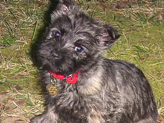
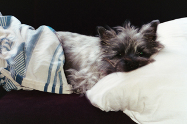

Here is a picture of my dog Molly. Molly is a Cairn Terrier.
 Cairn Terriers are originally from Scotland, where they were breed to hunt badgers and foxes in the Scottish Cairns -- rock piles thought to be left over from Roman times.
Cairn Terriers needed to be small enough to go down into a hole after a badger, and tough enough to fight a badger in its den. As such, these terriers are tough and stubborn.
Today's Cairn Terrier is far more likely to be found sitting by a fireside or on their owner's lap than fighting fierce prey in underground warrens.